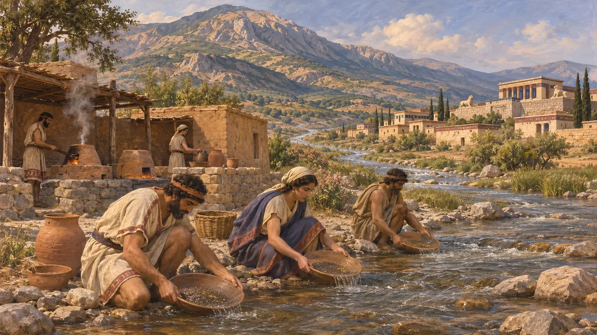
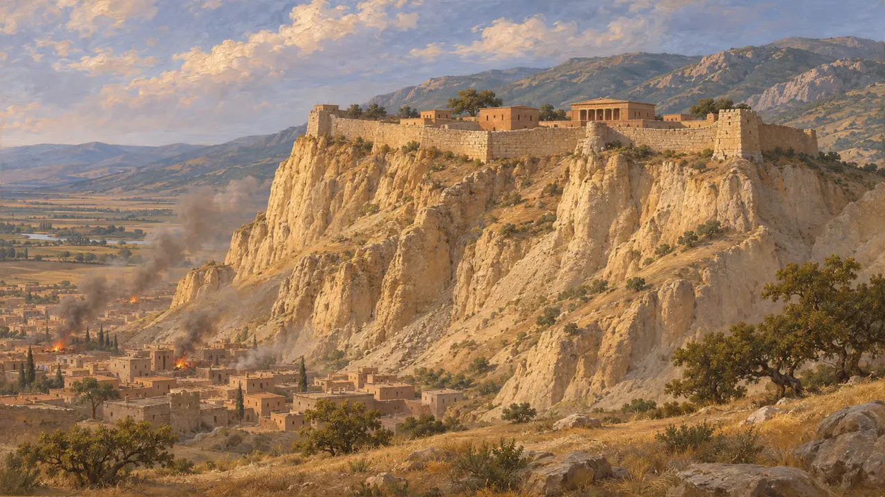
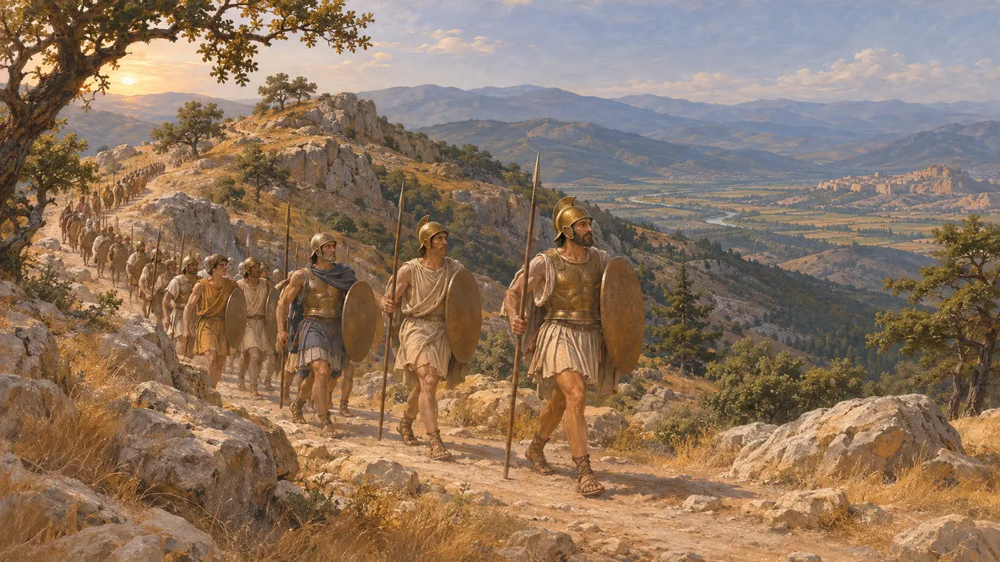
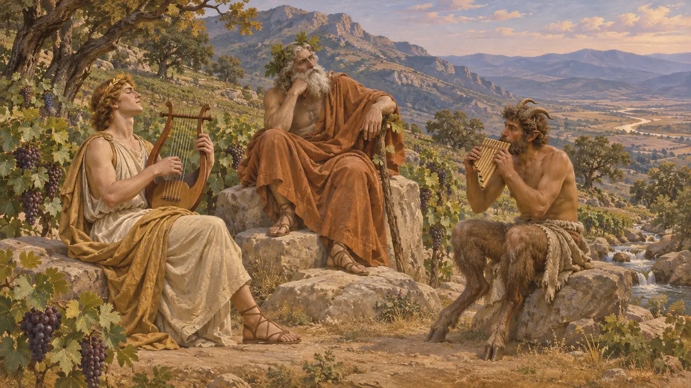

トモロス山
リュディアのサルディスの上にそびえる山。パクトロスの金の産地。紀元前6〜5世紀
トモロス山(現在のボズダー)は、リュディア西部でサルディスの南にそびえる山脈である。サルディスの城塞はその支脈の一つに建ち、パクトロス川がそこから市内を流れ下る。ヘロドトスは、この川が運び下ろす砂金をリュディアの数少ない驚異の一つに数えている。
ゲームでは： トモロス山はサルディスの面の背後にそびえている。サルディスの城塞はこの山を背にして築かれており、町の人々はその木材や葡萄園、そして山を越える道について語る。

砂金の山
古代の記述ヘロドトスは、リュディアにはトモロス山から運ばれてくる砂金を除けば、記すに値する驚異はほとんどないと述べている。また、サルディスの市場を貫いて流れるパクトロス川が、山から金を運び下ろしたとも述べている。発掘者たちは、リュディア人が金と銀を分離したパクトロス川のほとりの精錬所を発見しており、川の金が実在したことは確かである。ただし、ヘロドトスの時代にどれほどの金が残っていたかについては、彼は何も語っていない。
Herodotus 1.93, 5.101

尾根の上の城塞
古代の記述サルディスのアクロポリスは、平野を見下ろすトモロス山の急な尾根の上にある。ヘロドトスによれば、キュロスの軍は紀元前547年頃にここを落とした。リュディア人が険しすぎて見張りは要らないと考えていた側面を、マルドイ人の兵が登ったのである。紀元前498年には、下町が燃えるなか、この同じ城塞がアルタフレネスのために持ちこたえた。
Herodotus 1.84, 5.100

山越えの道
古代の記述紀元前498年、イオニア人と同盟者のアテナイ人およびエレトリア人は、エフェソスに船を残してカユストロス川の谷を進み、トモロス山を越えてサルディスに攻め下った。町が燃えた後、彼らは同じ道を引き返し、エフェソス近くで敗れた。この進路は、エーゲ海沿岸がサトラップの座所にいかに近かったかを物語っている。
Herodotus 5.100-102

葡萄の木と山の神
後世の伝説後世のギリシア・ローマの著述家たちはトモロス山の葡萄酒を称え、この山をディオニュソスの遊び場としている。オウィディウスなどは、トモロスがアポロンとパンの競演を裁いたとまで語る。だが、これらの話はペルシア時代よりはるか後のもので、リュディア時代やペルシア時代のトモロスそのものについては何も語っていない。
Ovid, Metamorphoses 11.150-171; Virgil, Georgics 2.98
出典
- Herodotus 1.84, 1.93, 5.100-102
- C. H. Greenewalt and others, excavations at Sardis (Archaeological Exploration of Sardis)
- Ovid, Metamorphoses 11.150-171